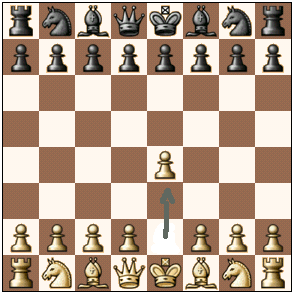
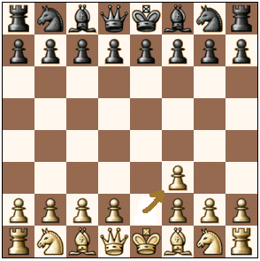

Lógica do Projeto
O software do projeto se resume em "rastrear" as peças pelo tabuleiro a partir de sensores(reed-switch) instalados em baixo das casas do tabuleiro controlados por um Arduino.
A partir disso, criamos uma proposta de software para operar o hardware proposto pelo outro grupo. O software usa como referência a posição inicial das peças e quando removidas de sua posição inicial, o sensor daquela casa desliga e quando o proximo sensor é ativado, o software consegue detectar se a jogada foi valida ou não, no final da partida, é gerado um relatorio com cada jogada feita e dados gerais da partida.
- 
Jogada Valida
- 
Jogada Invalida